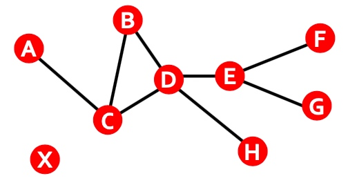
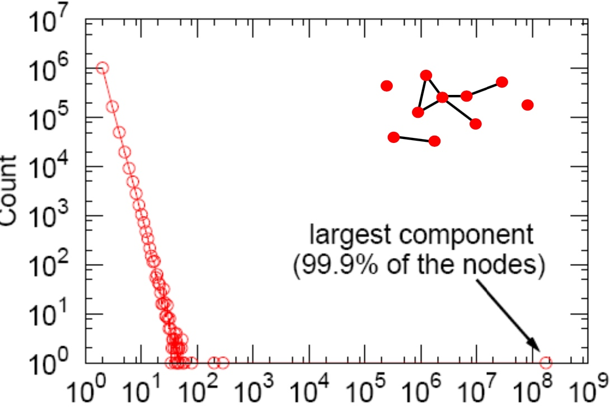
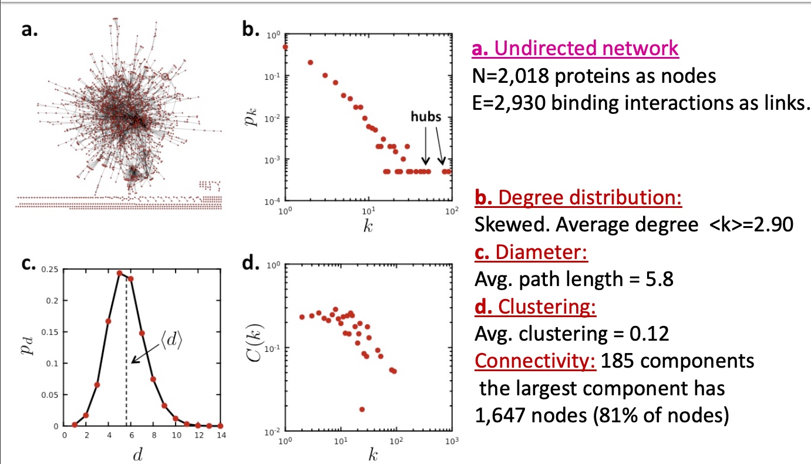
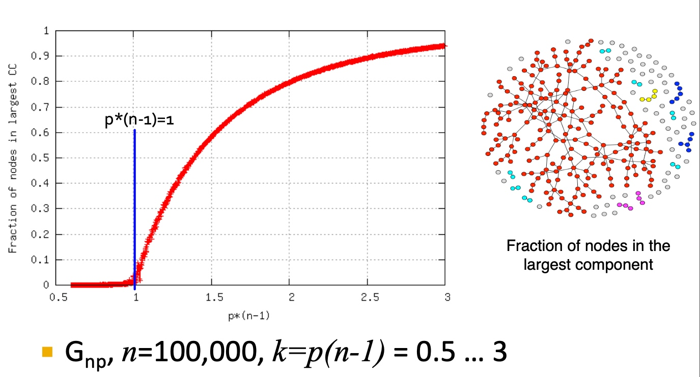
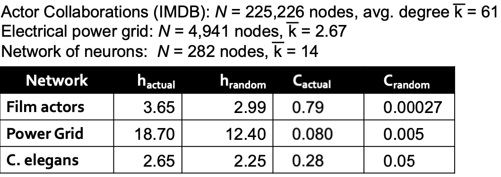
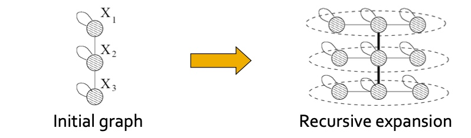
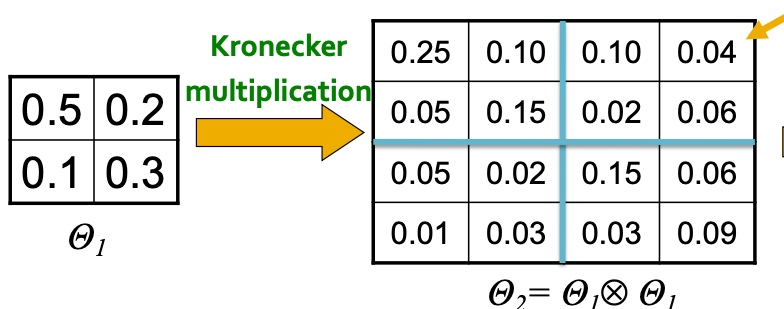
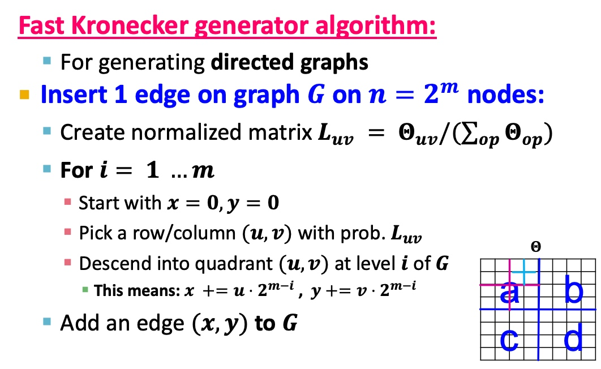
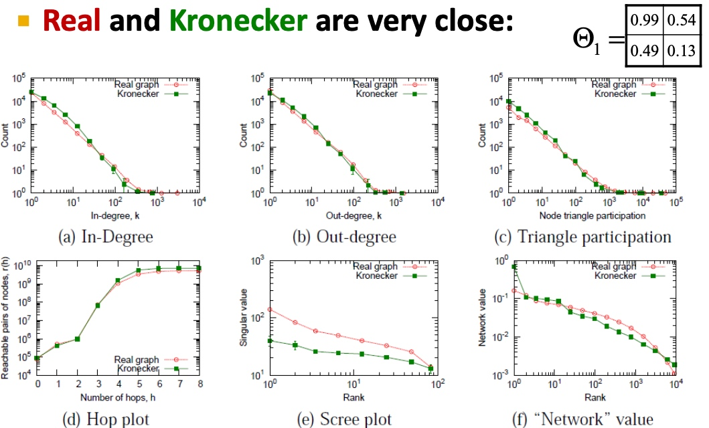

如何描述一个网络
Degree Distribution
P(k): 随机选择的节点， 度为k的的概率分布， 使用直方图来描述

其中\(N_k\)表示度为k的节点数， 比如上图中，度为1的节点数有6， 所有节点数为10， 所以\(P(6)=0.6\)
Path Length
Path: path是指每个节点连接下一个节点的序列，其中，一个path能够重复多次相同的边， 如下图： ACBDCDEG

Distance: 连接节点对最少数量的边，称为两个节点间的distance，如下图，其中\(h_{B,D}=2, h_{A,X}=\infty\)， 若图中两节点无连接，或中间连接断开，则distance为无穷，在有向图中，distance的计算应该考虑两个节点间的方向，如下图\(h_{B,C}=1, h{C,B}=2\)，不是对称的：


Diameter在graph中，所有节点对当中最长distance；
Average path length针对graph来说， average path length计算公式如下：
\[h_{average}=\frac{\sum_{i,j!=i h_{ij}}}{2E_{max}}\]
其中\(h_{ij}\)是node i到node j的distance, \(E_{max}\)是指图最多可存在的边数：\(\frac{n(n-1)}{2}\)
Cluster coefficient
cluster coefficient 对于无向图，用来描述节点i与他的邻居的链接情况， 其中节点i的度为\(k_{i}\)，clustering coefficient计算公式如下：
\[C_{i}=\frac{2e_{i}}{k_{i}(k_{i}-1)}\]
如下图， 图的node i的cluster coefficient计算如下：\(C_{i}=\frac{2*6}{4*(4-1)}=1, C_{i}=\frac{(2*3)}{4*(4-1)}=0.5, C_{i}=\frac{2*0}{4*(4-1)}=0\)
Average clustering coefficient: \(C=\frac{1}{N}\sum_{i}^{N}C_{i}\)


\(K_{A}=1, e_{A}=0, C_{A}=0\)
\(k_{B}=2, e_{B}=1, C_{B}=1\)
\(k_{C}=4, e_{C}=2, C_{C}=1/3\)
\(k_{D}=4, e_{D}=2, C_{D}=1/3\)
\(k_{E}=3, e_{E}=0, C_{E}=0\)
\(k_{F}=1, e_{F}=0, C_{F}=0\)
\(k_{G}=1, e_{G}=0, C_{G}=0\)
\(k_{H}=2, e_{H}=1, C_{H}=1\)
avg. clustering: C= (1+1/3+1/3+1)/8=1/3
Connected components
Connectivity
图当中最大的可连接的component：能够通过path链接的任意两个几点的最大的集合；
如何找到图当中的connect components，从图中随机节点开始，按广度优先策略遍历，标记遍历过的节点，如果，所有的节点均被遍历，那么这个未connected component， 否则从未遍历的节点中随机开始，重复广度优先策略遍历；

描述实际中的图：MSN Messenger
msn一个月的相关的数据，如下：
Degree Distribution

x坐标log之后：

可见大部分的节点degress在个位数。
Clustering
将所有的节点的k与c绘制在如下图中，整个graph的avg culstering coefficient约为0.1140

Connected Components

Diameter
msn的graph中平均path length为6.6， 90% 的节点能够触及在8个链接后触及到另一节点；

图的核心属性如何使用？
这些graph的属性是意外的还是在我们本身预料之中？

PPI Network

Random Graph Model
Simplest Model of Graph
ER Random Graphs
两个变种：
- \(G_{np}\)： n个节点的无向图，其中每一条边是概率为p的独立同分布；
- \(G_{nm}\): n个节点的无向图，其中m个边均匀随机生成；
需要说明的是，n, p 无法唯一地的决定graph，如下图，相同的n,p下， 我们有不同的图：

Degree Distribution of \(G_{np}\)
假定\(P{(k)}\)表示度为k在所有节点中的占比， 则
\[P_{(k)}= C_{n-1}^{k} p^{k}(1-p)^{n-1-k}\]
很明显的binomial distribution, 所以均值、方差为：
\[k_mean = p(n-1)\]
\[\sigma^2 = p(1-p)(n-1)\]
标准差率为：\(\frac{\sigma}{k_mean} \approx \frac{1}{(n-1)^{0.5}}\)，当图无限大的时候，则标准差为0， 所有的节点都为\(k_mean\)。
Clustering Coefficient of \(G_{np}\)
已知\(C_{i}=\frac{2e_{i}}{k_{i}(k_{i}-1)}\), 在\(G_{np}\)，边为概率为p的独立同步分， 其中\(E[e_{i}] = p\frac{k_{i}(k_{i}-1)}{2}\), 故\(E[C_i] = \frac{pk_i(k_i - 1)}{k_i(k_i -1)} = p = \frac{k_{avg}}{n-1} \approx \frac{k_{avg}}{n}\)
Expansion
定义\(\alpha\): 如果一个graph的任意的子集S,子集中边的条数大于alpha乘以子集或者graph去除子集之后的节点数量， Expansion通常用来衡量图的lu'bang'xing：
\[\alpha = \mathop{\min}_{S \subseteqq}{\frac{\# edges\ leaving\ S} {min(|s|, |V \ S|)}}\]

这张ppt没理解清楚，

在\(G_{np}\)中，n*p为常数，所以avg deg k也为常数：

Connected Components
\(G_{np}，其中n = 100000, k=p(n-1)=0.5...3\)，Largest CC中节点占图中所有节点的比例

Random Graph Model vs. MSN
在Random Graph Model 和实际的MNS的4个核心属性对比：

真实网络和Random Graph类似吗 ？
- Giant Connected component: yes
- Average path length: yes
- Clustering Coefficient: No
- Degree Distribution: No
The Small-World Model--能同时保证high clustering且短path的图吗？

回顾下前面MSN network，clustering coef为0.11， 而\(G_{np}的clustering coef为8*10^{-8}\)。
另外一个例子， IMDB数据集、Electrical power grid, Network of nerons中：

其中h：average shortest path length， C: avg clustering coefficient， random，是保证相同avg degree，相同节点下的图的情况。

下图左边：高clustering coefficient： 朋友的朋友是我的朋友；

Small-World同时保证high cluster and low diameter；
如下图，从high clustering/high diameter, 到low clustering/low diameter， 增加随机性（p变大）: 即随机的将一条边的另一个端点连接到任意较远的节点上，这样可以保持high clustering，low diameter；

下图中的p区域保证保证high clustering 和low path length：

Kronecker Graph Model: Generating large realistic graphs
递归的graph的生成: Self-similarity

Kronecker Produce是一种生成self-similar矩阵的方法：

Kronecker Product 定义如下：

举个例子：

- 构建一个\(N_1 * N_1\)的初始概率矩阵；
- 计算k阶Kronecker 矩阵；
- 遍历k阶矩阵，按\(p_{uv}\)构建edge(u, v)链接
 如上图最后， 需要模拟\(n^2\)次，耗时太高， 是否有更高效方法(利用其递归结构)？
如上图最后， 需要模拟\(n^2\)次，耗时太高， 是否有更高效方法(利用其递归结构)？

真实网络与Kronecker网络很相似， 右上角为其初始矩阵：
